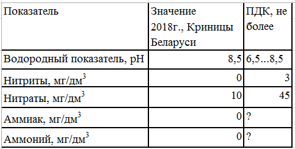

Святой источник
17.11.2018
Гродненская область > Зельвенский район > д. Сынковичи > Святой источник
Родник находится на востоке от д. Сынковичи, дорога к нему находится м/у домами 14 и 20. Вблизи находится купель и гостиничный комплекс для паломников. Родник капитально оборудован, к нему часто приходят люди за водой.
Родниковый ручей впадает в р. Березу
Анализ воды

Местоположение
Координаты: 53.1164548, 25.1570117